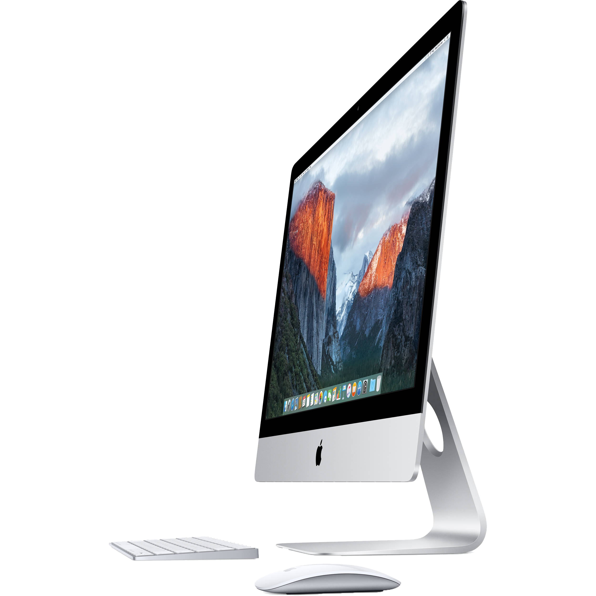

Wigan 401 Network Infrastructure
This site demonstrates different components used in the operation of the network in the Wigan 401 media lab at Victoria University's Te Aro campus. These components are things that are all part of the network and allow it to run smoothly
Press the right arrow key to proceed! >>
Cisco AIR-CAP3502I: - Wifi Router
This is the wifi router that Wigan 401 uses. This allows students and staff to access the internet via the universities UFB network.

Features
Two by Three multiple-input multiple-output (MIMO) with two spatial streams
Maximal ratio combining (MRC)
Legacy beamforming
Cat6 Ethernet Cables
These cables are used to connect all computers in the media lab to the main network. They allow upto 100mbps / 100Mhz data transfer rate. These are very useful when connecting to a network as hardwire is alot faster and more reliable than wireless.
27" iMac - Retina Display
There are approximately 50 27" iMacs in the Wigan 401 media lab. These are available for the students to use. Each computer is connected to the network, and each student has there own account to log into on that network. As well as this students can also log into a local guest account. The computers themselves also each have a 1TB local scratch drive, if wanting to use them offline of the network.
Pheonix Drive - Mac Pro
There is also a Pheonix drive, which is mainly used as a handin drive for uploading students projects for tutors to mark. This is a server running off an Apple Mac Pro. Each imac is able to be connected to the Pheonix drive by logging into their student account.
Ethernet Switch
An ethernet switch allows multiple computers to connect to one network. In Wigan 401 there is a 50 port ethernet switch. Each computer is able to connect to the network via ethernet cables and the switch.
Projectors and Presentation Computer
At the front of the media lab there are 3 HD projectors, as well as a Mac Pro connected to them. These projectors are used to showcase student work and for lectures to present. Like all othere computers, the presentation computer is able to connect to the Pheonix drive and others. The Mac pro is isolated from the presentation display and is connected with many data cables such as, HDMI and thunderbolt, Power Source, Mouse and Keyboard and USB hub cables.
UFB Network
Like the rest of the university, Wigan 401 has gigabit UFB broadband installed. This allows for smooth, uninterrupted internet service to students and staff. As well as this, the hardware for UFB allows much faster communications locally, allowing servers and networks to run more smoothly. There are various hardware components needed for UFB which are present in Wigan 401, such as an ETP (outside the building), an UFB router and fibre optic cabling.

Credits
Fractal Internet Map - entropychaos.wordpress.com
Cisco Wifi Router - Cisco.com
Ethernet Cable - Ebay.co.uk
iMac and Mac Pro - apple.com
Ethernet Switch - wikipedia.org/wiki/Network_switch
Projector - bhphotovideo.com
Impress.js framework - bartaz - github.com/impress/impress.js/